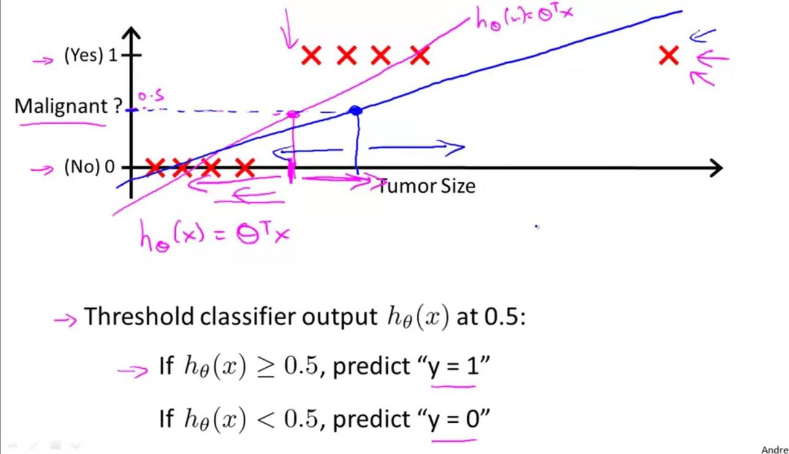
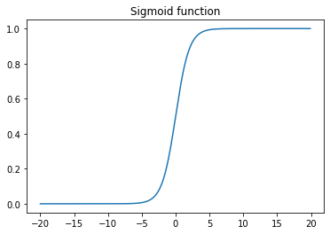
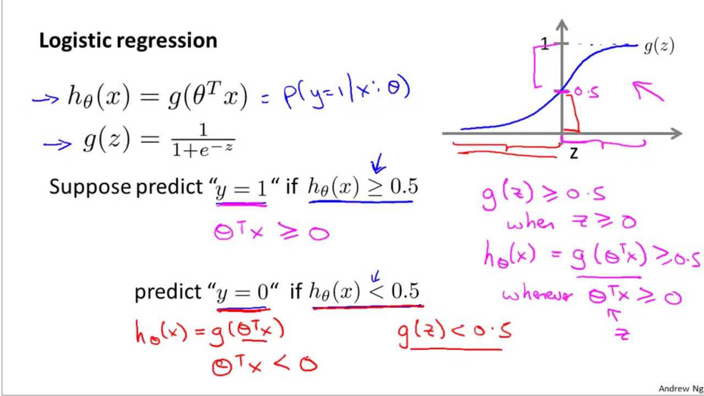
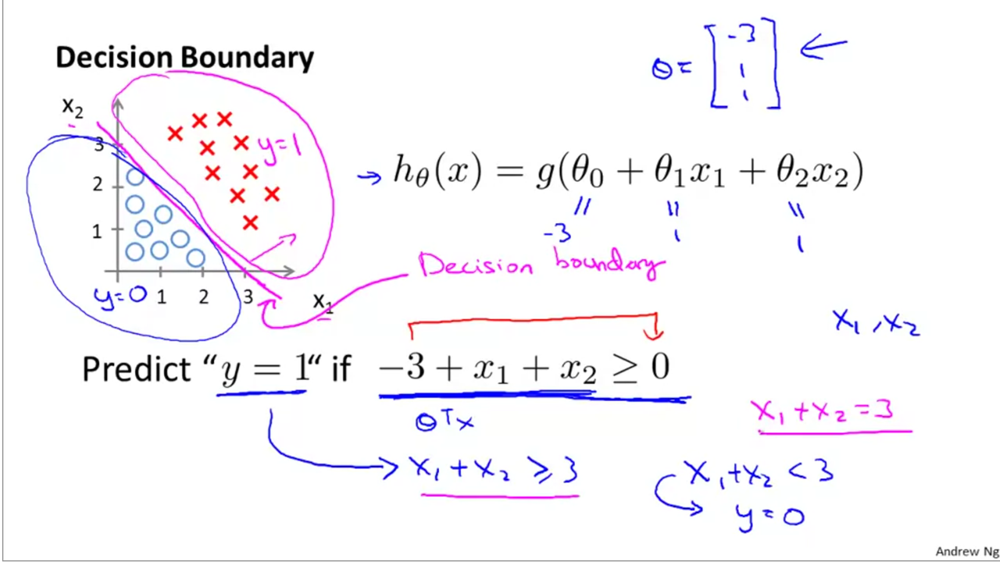
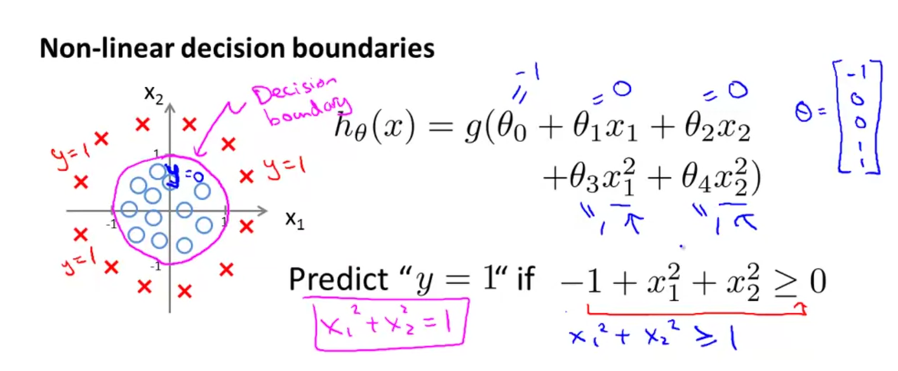
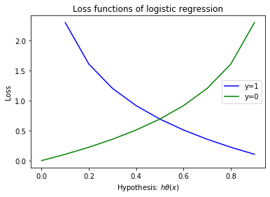
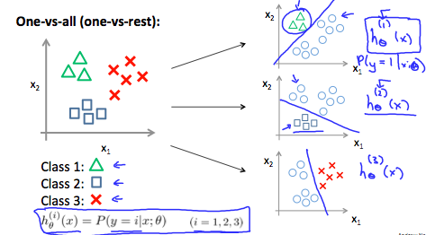

Understanding logistic regression
A logistic regression is a binary classification alogrithm. Its values are 0 for false cases and 1 for true cases. Before talking about logistic reg, let us consider why not to use linear regression for classification. We could hypothetically use linear reg to predict class probabilities and could theoretically set a threshold, (usually 0.5) above which we group to Class 1 and below which we group to Class 2. However this system has flaws. Consider the graphic below:

The system works well with the hypothesis function in red, until a new valid but outlier data enters the training. Now the regression function is changed to blue and that changes how it classifies borderline cases. Further, regression does not lend well for multi-class problems. Further, regression is likely to predict >1 and <0 class probabilities which aren’t true.
Logistic regression model¶
We represent the hypothesis function of logistic regression as $0 \le h_{\theta}(x) \le 1$. The hypothesis function can be represented as:
$$ h_{\theta}(x) = g(\theta^{T}x) $$ $$ where \; g(z) = \frac{1}{1+e^{-z}} $$
$g(z)$ is a sigmoid function, also called a logistic function, from which the regression gets its name. The hypothesis function looks similar to that of a linear regression, except for the product with the sigmoid function. The shape of the sigmoid function is given by:
vals = np.arange(-20,20,0.1) gz= 1/(1+np.e**(0-vals)) plt.plot(vals, gz) plt.title('Sigmoid function');

As z reaches $\infty$, $g(z)$ asymptotes to 1. The values always range betwen 0 < g(z) < 1. Thus, the hypothesis can be rewritten as
$$ h_{\theta}(x) = \frac{1}{1+e^{-\theta^{T}x}} $$
$h_{\theta}(x)$ gives us the probability that output = 1. Thus, if $h_{\theta}{x} = 0.7$, that means a 70% probability the output is 1 or a true case. Mathematically, this is represented as
$$
h_{\theta}(x) = P(y=1 | x;\theta) = 0.7
$$
which is read as “probability that y=1, given x, parametertized by $\theta$”. Since probability adds to 1, we can say, the inverse, probability of y=0 is 0.3:
$$ h_{\theta}(x) = P(y=0 | x;\theta) = 0.3 $$
Decision boundary of a logistic regression model¶

The shape of the logistic function is such that, g(z) > 0.5 when z > 0 and g(z) < 0.5 when z < 0, and g(z) = 0.5 when z=0. The z can be expanded as $\theta^{T}x$. Additionally, we can simplify that y=1 when $g(z) \ge 0.5$ and y=0 when $g(z) < 0.5$.
Now, consider this example dataset. The red cross show y=1 case and blue circles show y=0 case.:

We can represent this as $h_{\theta}(x) = g(\theta_{0} + \theta_{1}x_{1} + \theta_{2}x_{2})$. Solving for theta, say, we find that it is [-3;1;1]. Thus, from previous derivation, we know that y=1 when $-3 + x_{1} + x_{2} \ge 0$ as g(z) has to be >= 0. We can simplify it as shown in picture and derive the equation of the decision boundary which is sown in magenta on the pic. The following challenge will explain this better:

Non linear decision boundaries¶
We can represent non linearity in a linear model by adding additional parameters which are higher order representations of existing parameters, such as $h_{\theta}(x) = g(\theta_{0} + \theta_{1}x_{1} + \theta_{2}x_{2} + \theta_{3}x_{1}^{2} + \theta_{4}x_{2}^{2})$ as shown here:

To get the decision boundary, we need to solve for g(z)=0.5 case which happens when z=0. Thus, in pic we solve for $x_{1}^{2} + x_{2}^{2} = 1$ which is the equation of a circle.
Using this theory, decision boundaries that take complex shapes can be represented using a linear model and can be solved using logistic regression.
Cost function for logistic regression¶
The same cost function that we had for linear regression would apply for logistic regression, however, it leads to a non-convex loss function. The GD algorithm would fail to arrive at the global minima. Thus, we derive a new cost function as:
$$ J(\theta) = \frac{1}{m}\sum_{i=1}^{m}cost(h_{\theta}(x),y) $$ where, $$ cost(h_{\theta}(x), y) = \begin{cases} -log(h_{\theta}(x)) & y=1 \ -log(1-h_{\theta}(x)) & y=0 \end{cases} $$
Note, log(0) = inf, log(-1) = nan, log(1) = 0. Thus, we can plot this cost term as follows:
xvals = np.arange(0,1,0.1) y1vals = 0-np.log(xvals) y0vals = 0-np.log(1-xvals) plt.plot(xvals, y1vals, 'b', label='y=1') plt.plot(xvals, y0vals, 'g', label='y=0') plt.title('Loss functions of logistic regression') plt.legend(); plt.xlabel('Hypothesis: $h\\theta(x)$'); plt.ylabel('Loss');

From the graph, when h(x)=1 for y=1, the cost term is 0 (blue line). As predicted class reduces and approaches 0, the cost raises to inf. Likewise, when h(x)=0 for y=0, the cost is also 0. However as the predicted value increases, the cost also increases penalizing the wrong prediction.
Instead of having two equations, the cost term can be simplified into the following:
$$ cost(h_{\theta}x,y) = -ylog(h_{\theta}(x)) - (1-y)log(1-h_{\theta}(x)) $$
plugging the cost term in the cost function, we get:
$$ J(\theta) = -\frac{1}{m}\sum_{i=1}^{m}y_{i}log(h_{\theta}(x_{i})) + (1-y_{i})log(1-h_{\theta}(x_{i})) $$
Gradient descent optimization for logistic regression¶
To find the values of $\theta$ at the global optima, we need to differentiate the cost function written earlier. This turns out to be
repeat until convergence: $$ \theta_{j} := \theta_{j} - \alpha\sum_{i=1}^{m}(h_{\theta}(x_{i}) - y_{i})x_{i,j} $$
The above update rule, is just the same we had for linear regression. Thus, GD for linear and logistic regression is the same. What has changed is the hypothesis and the cost functions. A vectorized implementation of GD is
$$ \theta := \theta - \frac{\alpha}{m}X^{T}(g(X\theta) - \vec{y}) $$
Using logistic regression for multiple classes¶
While the most use cases of logistic reg is to predict boolean classes, we can extend it to a multi-class problem using a technique called one-vs-all.

We essentially build multiple models, equalling the number of classes. Each model predicts the probability that given value will fall within the class it is trained to predict. Finally we find the class with max probability and assign it to the prediction.
OCR on MNIST digits database using multi-class logistic regression¶
The MNIST database has 14 million images of handdrawn digits. We work with a subset of 5000 images. Each image is 20x20 pixels. When laid out as a column vector (which is how Neural Nets and log reg algorithms will read it), we get a 1x400 row vector. A sample of 100 images is below:

Here, we build a multi-class regularized logistic regression model to solve this classification problem. We train this multi-class logistic regression model by iterating a simple log reg model for each class. Each iteration will produce a set of $\theta$ values which predict the probability for that class. Finally we will assemble all theta into a 2D matrix.
The weights / theta is a 2D matrix (unlike a vector for simple logistic reg), where each row is the weight vector for a particular class. Since each pixel is considered an input feature and since we have 10 classes to predict, we get theta as $\Theta_{10x401}$ matrix. 401 because we add 1 bias feature to 400 features which is obtained by flattening the 20x20 image into a 400x1 vector.
During the training process, we need to represent the output class not as digits, but as one-hot encoded vector since that is what log reg understands. Finally during the prediction phase, we will translate the one-hot encoded prediction into the actual class label, which is the predicted digit.
The full MATLAB/OCTAVE implementation can be found here.